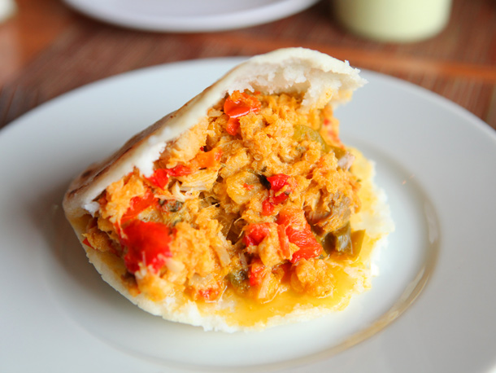

Cocinando/ando
Arepa de Cazon
10 de julio del 2018
La arepa de cazón se prepara rellenando la arepa con un guiso a base de pescado que queda sequito y gustoso. Se debe sancochar unos 500 grs. de cazón, se le retira la piel y se desmecha finamente, se reserva. Aparte preparar un guiso con cebolla, ajo y abundante ají dulce, se saltea en aceite onotado y se añade el cazón esmechado, se mezcla bien y se salpimienta al gusto, puede añadirle un poco de vino y se deja cocinar bien, cuando esté sequito se rectifica la sazón y listo. Rellene su arepa y rememore las costas orientales venezolanas, si no tiene cazón puede sustituirlo por raya. Cuajada, Queso blanco, guayanés, amarillo ó telita,. Los derivados de la leche como son la mantequilla, nata, cuajada y diversos quesos son acompañantes ideales para la arepa aquí nos gusta comerlas calientitas con mantequilla o nata y rellenas del queso de nuestra preferencia siempre quedan deliciosas así que solo basta escoger el suave queso guayanés o telita, una cuajada de sabor delicado o un queso llanero de sabor firme siempre son maravillosos acompañantes, y para los que están fuera de este país y no tiene acceso a nuestros quesos típicos siempre encontrara un suave queso blanco o amarillo que haga compañía a nuestra querida arepa.

David: buen post!

Tom: excelente!

Jorge: magnifico!
Pabellon
10 de julio del 2018

El pabellón es un plato que nos ha acompañado a lo largo de nuestra historia, ha crecido con nosotros, con pequeñas variaciones en las diferentes regiones de Venezuela, pero manteniendo siempre la esencia única y pura del plato nacional por excelencia, es representativo de la dieta criolla urbana principalmente, es difícil precisar el origen del plato, pero ya a finales del siglo XIX era reconocido en Caracas. Se compone de Arroz Blanco, Carne Mechada, Caraotas Negras y Tajadas de Plátano Frito, dispuestos todos de forma ornamental destacando al máximo su color, aroma y sabor. En este plato se crea un equilibrio entre todos sus componentes, tanto en color como en sabor, cada uno es parte importante de la culinaria venezolana.
David: buen post!
tom: excelente!
Jorge: magnifico!